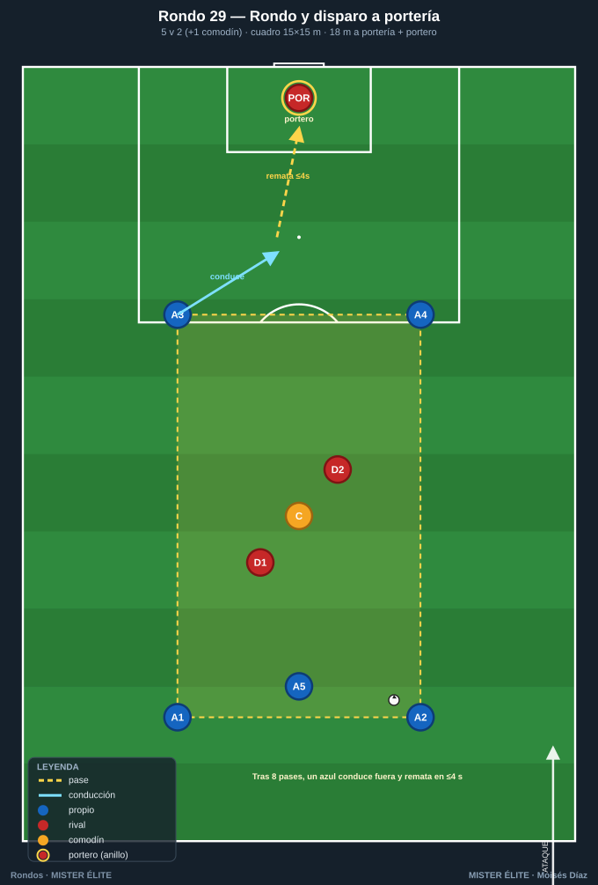
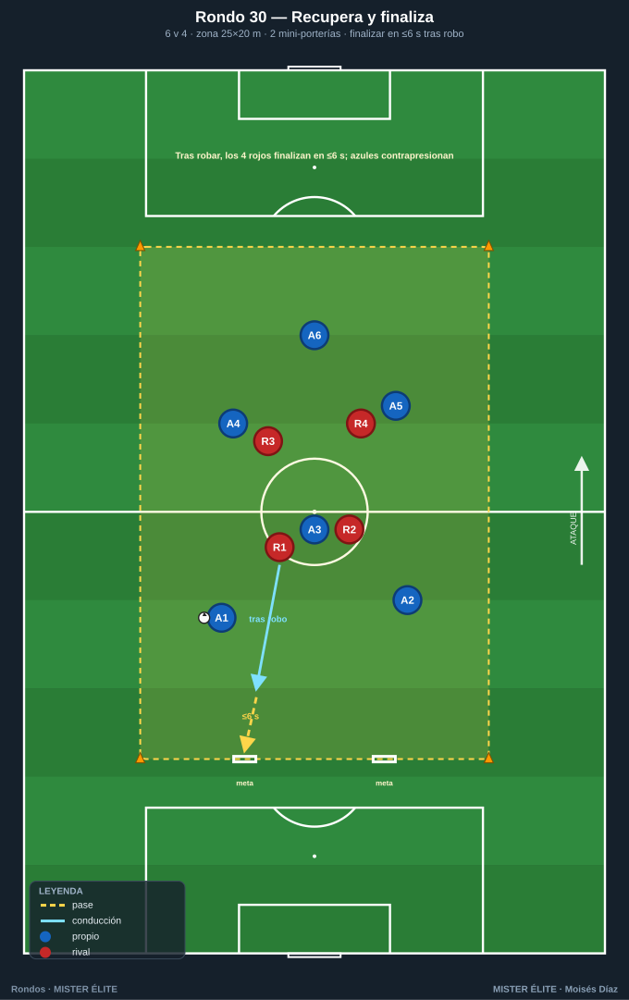
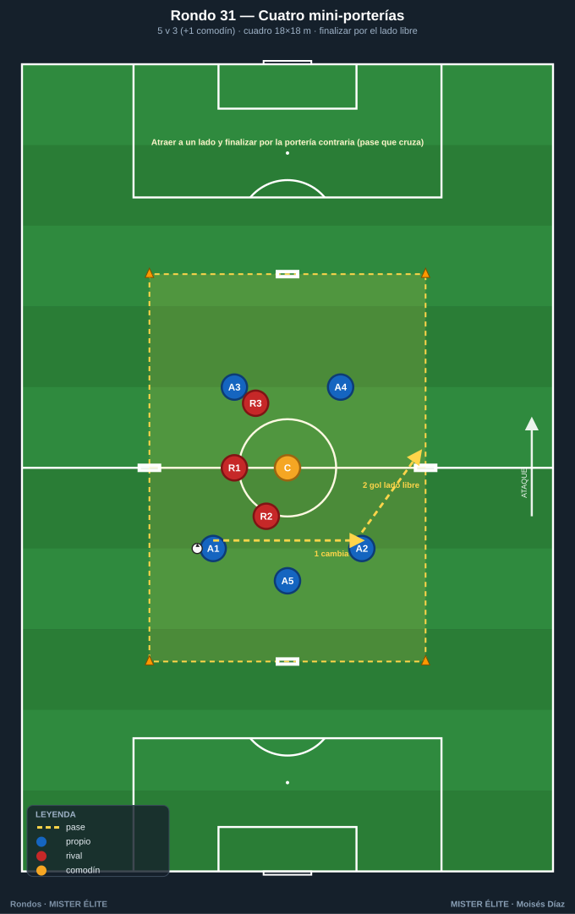
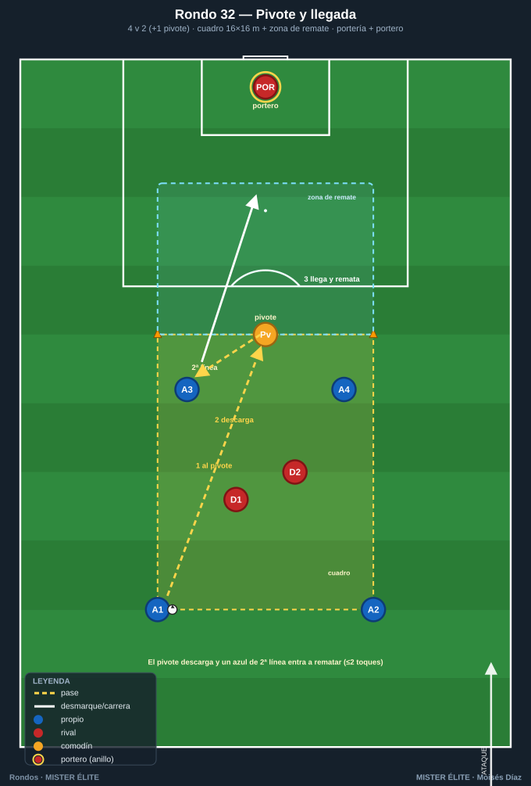
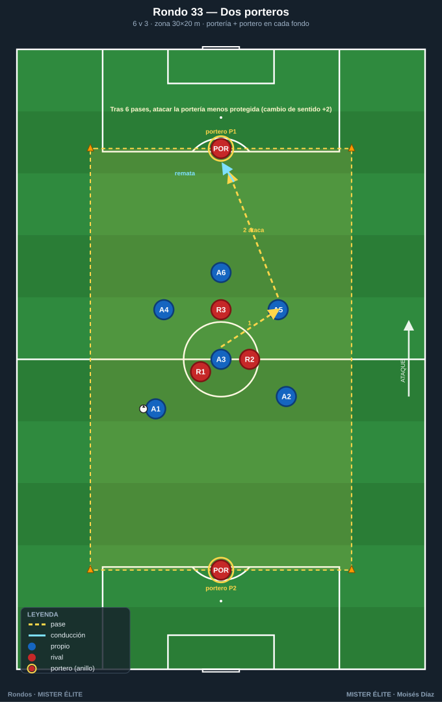
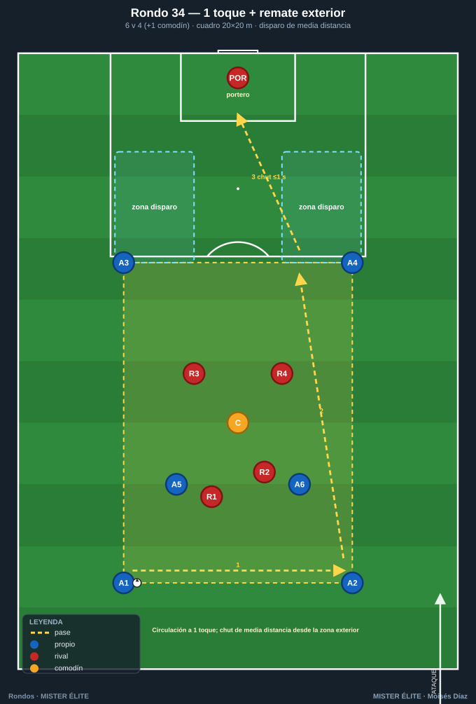
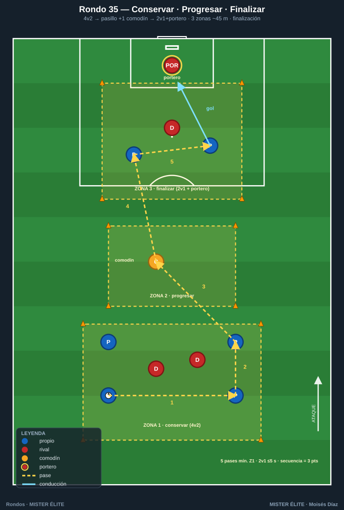

Familia 5 · Finalización — del rondo al remate (Rondos 29–35)
Convertir la posesión en gol: última pasada, llegada, definición, ataque del espacio tras la superioridad. Porterías y/o portero.
Notación: poseedores = azules, defensores = rojos, comodines = ámbar. Espacio con conos; flechas según
README.
Rondo 29 — "Rondo y disparo a portería"
Objetivo - Táctico: del mantenimiento al remate; finalizar tras una secuencia de conservación; activar la concentración para rematar después de circular.
Organización - Relación: 5 v 2 (+1 comodín) en cuadro de 15×15 m situado a 18 m de una portería reglamentaria con portero, centrado frente a ella. - Material: 8 conos, 1 portería + portero, balones repartidos en el cuadro y de reserva.

Desarrollo 1. Rondo normal 5v2 + comodín. 2. A la señal del entrenador (o tras 8 pases), el azul con balón conduce fuera del cuadro hacia la portería y remata en los siguientes 4 segundos. 3. Tras rematar, el cuadro se reordena con un balón nuevo y sigue el rondo hasta la siguiente señal. Portería frontal a 18 m; el portero juega.
Provocaciones (medibles) - El remate en ≤ 4 s desde que el balón sale del cuadro. - Solo cuenta gol si antes hubo mínimo 8 pases o la señal. - 1 punto gol, 0 si para el portero, –1 si el remate sale fuera (penaliza la precipitación). - Bonus: gol a primer toque tras recibir fuera del cuadro = doble.
Variantes (fácil → difícil) - Fácil: remate sin oposición, balón parado a la salida. - Medio: la descrita. - Difícil: 1 rojo del cuadro sale a perseguir al rematador (presión por detrás).
Coaching - Levantar la cabeza al salir del cuadro para fijar al portero; primer apoyo orientado hacia portería; golpeo con decisión, sin frenar la conducción.
Duración / series: 4 series de 3 min (rotando los 2 rojos), 90 s descanso. Total ~18 min.
Rondo 30 — "Recupera y finaliza" (transición ofensiva al remate)
Objetivo - Táctico: finalizar tras robar; transición defensa-ataque inmediata; los recuperadores se convierten en rematadores.
Organización - Relación: 6 v 4 en zona de 25×20 m con dos mini-porterías (1,5 m, sin portero) en la línea de fondo del lado de los azules. - Material: 10 conos, 2 mini-porterías, petos, balones.

Desarrollo 1. Los 6 azules mantienen la posesión. 2. Cuando los 4 rojos roban, tienen 6 segundos para finalizar en una de las dos mini-porterías. 3. Tras gol o pérdida fuera, balón nuevo a los azules.
Provocaciones (medibles) - Gol rojo válido solo en ≤ 6 s desde el robo. - Azules: 1 punto por cada 10 pases consecutivos sin pérdida. - Si los azules recuperan antes del gol, anulan la acción y reinician su cuenta. - Cada gol rojo = 2 puntos.
Variantes (fácil → difícil) - Fácil: mini-porterías más anchas (2,5 m), 8 s. - Medio: la descrita. - Difícil: 4 s; los azules pueden volver a robar.
Coaching - Rojos: primer pase tras el robo siempre hacia la portería; reconocer al compañero mejor orientado. Azules: presión inmediata tras pérdida para evitar el gol.
Duración / series: 5 series de 2:30, 75 s descanso. Total ~17 min.
Rondo 31 — "Rondo a cuatro mini-porterías"
Objetivo - Táctico: orientación + finalización multidireccional; decidir hacia qué portería atacar según la presión; cambio de orientación que termina en gol.
Organización - Relación: 5 v 3 (+1 comodín) en cuadro de 18×18 m con una mini-portería (2 m, sin portero) en el centro de cada lado. - Material: 8 conos, 4 mini-porterías, petos, balones.

Desarrollo 1. Los azules circulan (con apoyo del comodín) buscando hueco para pasar el balón a través de cualquier mini-portería a un compañero al otro lado (gol = pase que cruza y es controlado por un azul). 2. Hay 4 porterías: siempre hay una desprotegida. Atraer a los rojos a un lado y finalizar por el contrario.
Provocaciones (medibles) - Gol = balón cruza la mini-portería a ras de suelo y lo recibe un azul al otro lado. - No marcar dos veces seguidas por la misma portería. - Mínimo 5 pases antes de finalizar. - El comodín no marca, solo asiste.
Variantes (fácil → difícil) - Fácil: 6v2 + comodín, sin límite de pases previos. - Medio: la descrita. - Difícil: 5v4; gol doble si se finaliza ≤ 2 s tras un cambio de orientación de banda a banda.
Coaching - Mirar la portería contraria a la presión antes de recibir; fijar al rojo en un lado y abrir al libre; pase de gol al pie del compañero, no a la portería vacía sin receptor.
Duración / series: 4 series de 3 min, 90 s descanso. Total ~18 min.
Rondo 32 — "Pivote y llegada" (remate de segunda línea)
Objetivo - Táctico: finalización de llegada desde segunda línea tras descarga del pivote; timing de la incorporación al remate.
Organización - Relación: 4 v 2 (+1 comodín-pivote) en cuadro de 16×16 m pegado a una zona de remate de 12 m que da a portería con portero. - Material: 8 conos, 1 portería + portero, balones.

Desarrollo 1. Rondo 4v2 con apoyo del pivote ámbar. 2. Cuando el pivote recibe orientado, descarga atrás/lateral y un azul de segunda línea entra en la zona de remate para finalizar de primeras o tras un control. 3. Clave: el rematador no arranca hasta que el pivote toca el balón. Portería frontal con portero a 12 m.
Provocaciones (medibles) - El remate lo hace un azul que estaba dentro del cuadro y llega corriendo (no el pivote). - Solo válido si hubo descarga del pivote en la jugada. - Remate en ≤ 2 toques dentro de la zona. - Gol = 1; gol de primeras = 2.
Variantes (fácil → difícil) - Fácil: sin portero, zona de remate más cerca. - Medio: la descrita. - Difícil: 1 rojo persigue al rematador hasta la zona.
Coaching - El pivote juega de cara cuando puede; de espaldas descarga al primer toque; el rematador lee el momento del pase y ataca el espacio, no el balón; golpeo cruzado lejos del portero.
Duración / series: 5 series de 2:30, 75 s descanso. Total ~17 min.
Rondo 33 — "Rondo dinámico con dos porteros" (finalización a dos lados)
Objetivo - Táctico: finalización bidireccional con portero real; cambiar el sentido del ataque tras conservar; remate ajustado bajo presión.
Organización - Relación: 6 v 3 en zona de 30×20 m con portería + portero en cada fondo. - Material: 8 conos, 2 porterías, 2 porteros, petos, balones.

Desarrollo 1. Los azules mantienen la posesión en el espacio central. 2. Tras 6 pases, quedan habilitados para atacar cualquiera de las dos porterías, eligiendo la menos protegida. 3. Tras el remate, balón nuevo del entrenador y vuelta a la conservación. Los rojos, si roban, finalizan en cualquier portería sin requisito de pases.
Provocaciones (medibles) - Azules: 6 pases habilitan el remate; remate antes = anulado. - Solo 1 remate por posesión; si falla, vuelven a conservar. - Rojos finalizan libres tras robo. - Gol = 1; gol a la portería que NO se atacaba al inicio (cambio de sentido) = 2.
Variantes (fácil → difícil) - Fácil: 7v2, 4 pases para habilitar. - Medio: la descrita. - Difícil: 6v4, 8 pases y rematar en ≤ 5 s tras habilitarse.
Coaching - Leer dónde están los rojos para elegir portería; el cambio de orientación largo abre la portería opuesta; finalizar al primer hueco, sin sobreelaborar.
Duración / series: 4 series de 4 min, 90 s descanso. Total ~22 min.
Rondo 34 — "Rondo 1 toque + remate exterior"
Objetivo - Táctico: circulación a un toque y disparo de media distancia; la velocidad de circulación genera el espacio para el chut exterior.
Organización - Relación: 6 v 4 (+1 comodín) en cuadro de 20×20 m con una zona de disparo exterior marcada por arcos de conos en dos esquinas, frente a portería con portero a 16 m. - Material: 10 conos, 1 portería + portero, balones.

Desarrollo 1. Rondo a 1 toque obligatorio (comodín a 2). 2. La circulación rápida arrastra a los rojos hacia un lado. 3. Cuando un azul recibe en una zona de disparo exterior con espacio, chuta de media distancia. Tras remate, balón nuevo.
Provocaciones (medibles) - Toda la circulación a 1 toque; segundo toque = punto para rojos. - El disparo solo cuenta desde la zona exterior marcada. - Disparo en ≤ 1 s tras recibir en la zona (de primeras o control orientado máximo). - Gol de media distancia = 2 puntos; parada = 0.
Variantes (fácil → difícil) - Fácil: 2 toques permitidos, sin portero. - Medio: la descrita. - Difícil: 1 toque estricto y un rojo puede saltar a cerrar la zona de disparo.
Coaching - Ritmo alto de circulación para descolocar la presión; preparar el cuerpo para el chut antes de recibir; golpeo con interior-empeine, abajo y a los palos.
Duración / series: 5 series de 2:30, 75 s descanso. Total ~17 min.
Rondo 35 — "Rondo continuo: conservar–progresar–finalizar"
Objetivo - Táctico: integrar las tres fases en una sola tarea; encadenar mantenimiento, progresión entre zonas y remate; resistencia específica a la toma de decisiones.
Organización - Espacio: 3 zonas en línea hacia portería (total ~45 m). Zona 1 (conservación, 15×20): 4 v 2. Zona 2 (progresión, 15×20): pasillo con 1 comodín ámbar. Zona 3 (finalización, 15×20): 2 azules v 1 rojo + portero. - Material: 12 conos, 1 portería + portero, petos, balones.

Desarrollo 1. Se inicia en zona 1 conservando ante 2 rojos. 2. Tras 5 pases, se progresa a zona 2 apoyándose en el comodín, superando la línea de forma orientada. 3. En zona 3, los 2 azules que entran resuelven un 2 v 1 + portero y finalizan. Tras gol o pérdida, balón nuevo en zona 1. Los azules rotan posiciones entre zonas cada serie.
Provocaciones (medibles) - Respetar el orden de zonas (no saltarse la 2). - 5 pases mínimos en zona 1 antes de progresar. - El 2v1 final se resuelve en ≤ 5 s. - Secuencia completa conservar-progresar-gol sin pérdida = 3 puntos.
Variantes (fácil → difícil) - Fácil: 3v1 final con portero, zonas más cortas. - Medio: la descrita. - Difícil: 2v2 + portero en zona 3, y zona 1 pasa a 4v3.
Coaching - Cada salto de zona orientado hacia portería; en el 2v1, fijar al rojo y soltar en el momento; mantener calidad de pase pese a la fatiga acumulada.
Duración / series: 4 series de 4 min (rotando), 2 min descanso. Total ~24 min.
MISTER ÉLITE — Moisés Díaz